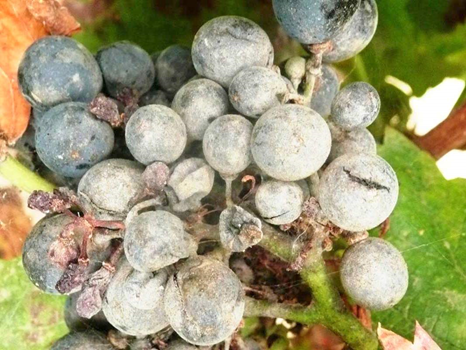
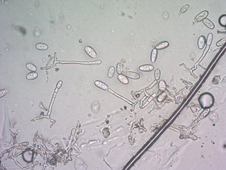
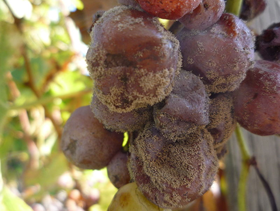
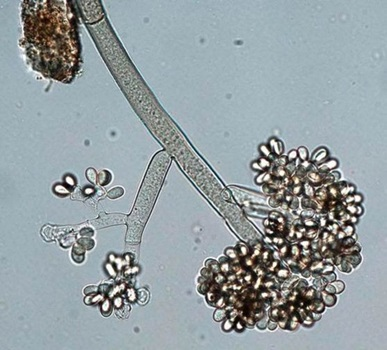

Fungal diseases of grape
Grapes are one of the most popular country crops. It is grown by both professionals and amateurs. When cultivating grapes, it is important to recognize various diseases in time and neutralize pests. You will learn how to do this correctly from this article. If grapes are exposed to any disease or insect, it always affects their appearance. Both individual parts of the plant and the entire culture as a whole can suffer.
Grape inflorescences are infrequently affected, so they remain untouched in most cases. But a few modifications can still happen. For example, a white, felt-like coating will tell you about the presence of a grape mite. A powdery coating similar to flour is the result of mildew exposure.
Preventive measures:
If grapes are grown in an unsuitable region or climate, receive less care and care, then they will often be affected by various types of diseases. Let's look at what gardeners have to deal with.
Oidium (Oidium Tuckeri Berk)
Oidium is a common disease of grapes, also called powdery mildew of grapes, ash, etc. It covers all vegetative organs of the grape bush with a gray powdery coating on top. The leaves and inflorescences affected by oidium wither, and the berries first crack, then dry up. It is caused by parasitic fungi of the genus Uncinula of the ascomycetes department.
Important! Absolutely all grape varieties are affected by oidium to a greater or lesser extent, even rootstocks. There are no absolutely oidium-resistant varieties that do not require spraying. The causative agent of oidium affects all the green organs of the vine – leaves, shoots, inflorescences, berries, ridges. The pathogen overwinters in the kidneys and on the affected shoots. The pathogen fungus lives on the surface of the host plant. The fungus appears mostly in moderately warm and wet weather, but can also spread rapidly during periods of high pressure. Primary infection occurs in the 1-3 leaf phase and before flowering (May-June).
 Botrytis cinerea
The fungus Botrytis cinerea attacks grape berries – and sometimes other parts of the vine – in high humidity conditions. It can develop into a destructive gray rot, but with a successful combination of circumstances it develops as a desirable botrytis, affecting the berries with the so-called "noble rot". Many of the great sweet wines of the planet are made from brown, wrinkled, "botrytized" berries covered with fluffy mold:
 During the ripening period, a dangerous fungal disease appears on the grapes — gray rot. The disease spreads to young shoots, buds, and leaves. But gray rot is especially dangerous for grape brushes. Fungal spores actively develop in wet rainy weather in August–September and threaten the entire crop on the bush.
>